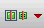
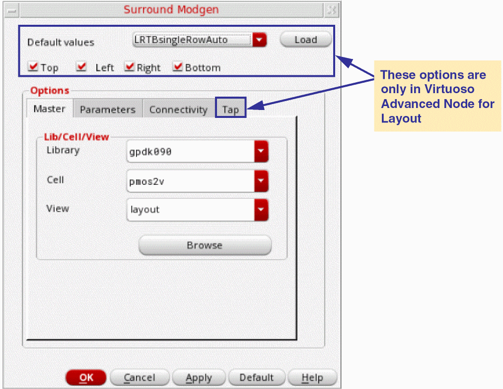
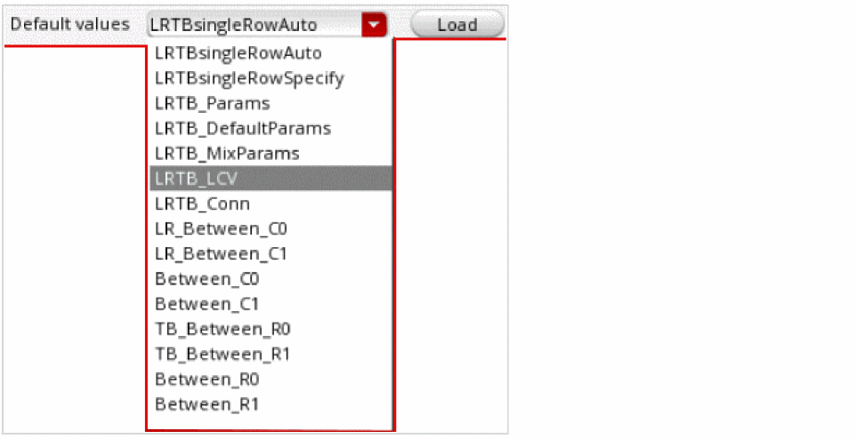
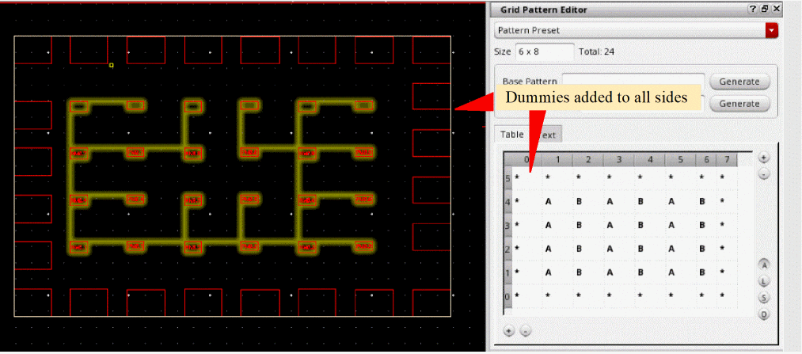
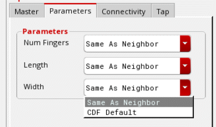
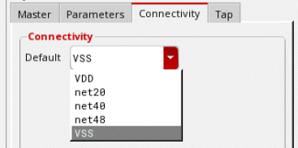
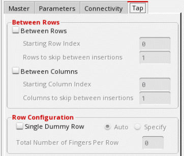
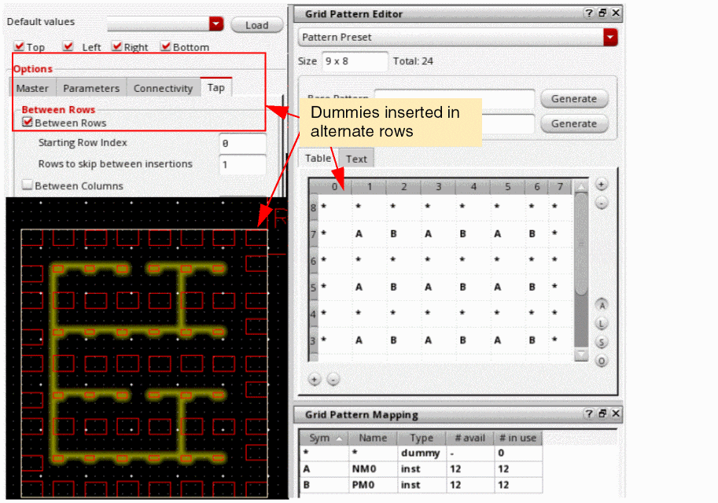
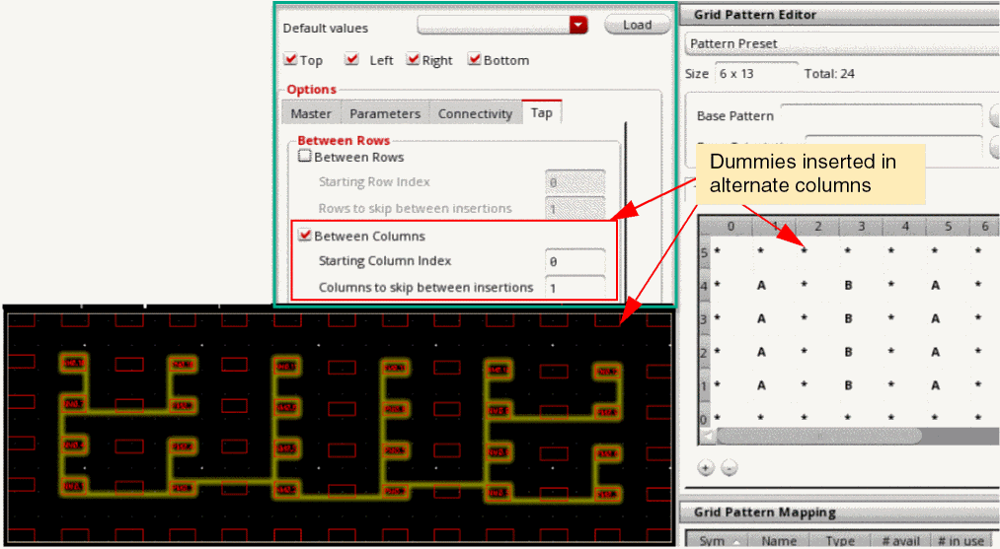

Adding Surround Dummies
To add surround dummies around the selected Modgen instances, select Surround Dummies from the Add Dummies  drop-down list in the Modgen editor.
The Surround Modgen form is displayed.

-
(Virtuoso Advanced Node for Layout Only) Select a pre-registered SKILL callback function from the Default values list that contains the values to be loaded.
 - Click Load to load values from the selected pre-registered SKILL callback function.
-
(Virtuoso Advanced Node for Layout Only) Select one or more sides (Top, Left, Right, and Bottom) to add surround dummies. In the following example, dummies are added to all four sides of the Modgen constraint.
 - On the Master tab (default), specify the Library, Cell, and View to be used to create custom dummy devices.
-
On the Parameters tab, specify the following dummy parameters.
 -
On the Connectivity tab, choose the net to which all dummy terminals must connect. If left blank (no net is selected), no terminals are created.
 -
(Virtuoso Advanced Node for Layout Only) On the Tap tab, select Between Rows to insert dummies between rows.
- Specify the first reference row for inserting dummy row in Starting Row Index.
- Specify the gap between dummy rows in Rows to skip between insertions.
- Select Between Columns to insert dummies between columns.
- Specify the first reference column for inserting dummy row in Starting Column Index.
-
Specify the gap between dummy columns in Columns to skip between insertions.
-
Select Single Dummy Row to insert a single row of dummies instead of individual dummies for each device. You can specify the number of fingers to be inserted in each dummy row.
 - Click OK.
Surround dummies are inserted as per your specifications.
Related Topics
Adding and Deleting Dummies in the Modgen Editor
Adding Dummy Device Rows or Columns
Methods to Delete Dummy Devices, Dummy Rows, and Dummy Columns
Return to top